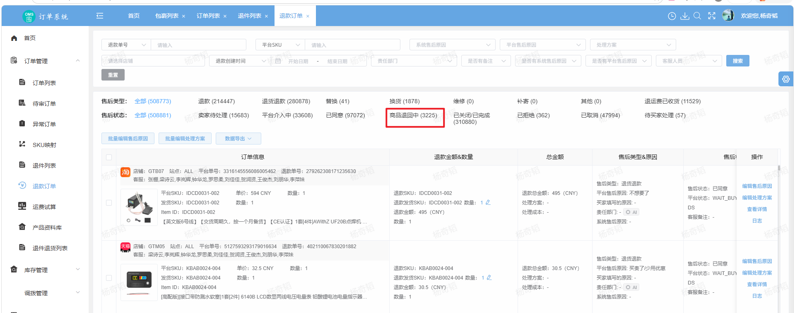

ERP · Logistics Product Requirement
逆向退件轨迹、物流轨迹规则与轨迹中心整合需求文档
以退款订单中的退件物流单号为触发入口，拉取平台逆向物流轨迹，再通过物流商/渠道规则按关键词识别和清洗标准节点，并在退款订单列表与物流轨迹中心统一展示。
评审稿版本 V2.0评审日期：2026-09-02目标系统：跨境电商 ERP优先级：P0 + P1
1. 结论与范围
本次建设包含两个职责清晰的页面：全新独立开发的“物流轨迹中心”负责轨迹查询和异常处置，“物流轨迹规则”负责识别配置；两者通过渠道规则、标准节点和规则版本关联。
评审结论建议：以物流渠道为最小规则生效单元；规则保存后只影响后续同步和后续识别，不回溯已落库的历史结果；正向与逆向使用同一包裹详情上下文，但状态、字段和规则独立维护。
| 项目 | 本期结论 | 依据 / 备注 |
|---|
| 建设目标 | 把承运商原始轨迹转换为可查询、可统计、可处置的标准物流节点。 | 两个原型共同体现：规则配置是数据基础，轨迹中心是使用场景。 |
| 本期范围 | 退款订单筛选触发逆向拉取、平台适配、原始轨迹落库、关键词识别清洗、退款订单物流单号轨迹弹窗/抽屉；以及规则 CRUD、节点取值、关键词/排除词、异常标签、预警天数、轨迹中心查询与监控。 | P0 逆向拉取与节点识别闭环；P1 规则版本、测试、任务治理增强。 |
| 新增硬性触发条件 | 订单系统 → 退款订单列表：退款状态 = “商品退回中” 且退件物流单号不为空。 | 满足条件的数据必须进入逆向轨迹拉取队列；不满足条件不得调用平台逆向接口。 |
| 不在本期 | 承运商采集算法重写、自动退款/赔付/补发、退件入库和质检流程、独立报表中心；TikTok 逆向接口暂不实现。 | 相关操作通过任务或业务单据跳转，不在轨迹页面内完成；TikTok 显示待接入，不得伪造成功。 |
| 原型数据口径 | 数量、时间、单号、Mock Toast 和示例规则仅用于演示，不可作为上线验收数据。 | 上线前必须接入真实接口并以服务端统计为准。 |
2. 两个原型对照与建设边界
| 维度 | 物流轨迹中心 | 物流轨迹规则 | 改造后系统要求 |
|---|
| 定位 | 面向运营、客服、仓储的包裹监控和异常定位。 | 面向物流运营/管理员的渠道识别规则维护。 | 形成“配置 → 同步识别 → 监控处置”的闭环，页面间可追溯跳转。 |
| 核心对象 | 包裹、平台单号、包裹号、物流单号、跟踪号、轨迹事件。 | 物流商、物流渠道、映射单号、标准节点、异常标签、规则版本。 | 定义唯一关联键：物流商 + 物流渠道 + 规则版本；包裹保存命中的规则版本。 |
| 状态模型 | 正向：未上网、已上网、已交航、已到达目的国、已签收、异常、退回；逆向：退回中、已签收、异常。 | 揽收、上网、交航、到达目的国、签收，以及退回和异常的取值规则。 | 建立标准节点编码和状态优先级，显示名称可配置但编码不可随意变化。 |
| 现有交互 | 筛选、状态 Tab、动态列表、抽屉详情、同步、导出、备注、重试。 | 筛选、添加/编辑/复制/删除、规则弹窗、关键词增删、标注抽屉。 | 保留用户已熟悉的查询和 CRUD；补齐校验、生效、测试、审计和失败反馈。 |
| 原型缺口 | 服务端分页/统计、真实同步状态、任务进度、异常任务闭环、数据权限未落地；未覆盖退款订单触发入口。 | 规则唯一性、冲突优先级、版本回滚、发布审批、测试样例、并发编辑未落地。 | 补充逆向采集任务、平台适配、退款订单联动和拉取失败处理。 |
评审边界：规则页面右侧“原型标注”面板及页面上的标注按钮只用于评审定位，不是业务功能；研发实现不得把标注内容、标注开关或标注数量带入生产页面。
3. 用户与核心场景
| 角色 | 任务 | 主要页面 | 关键成功标准 | 权限建议 |
|---|
| 物流运营 | 查看全量包裹、定位渠道异常、触发同步重试。 | 轨迹中心 | 可按状态/渠道快速缩小范围，知道异常原因和下一步。 | 查看、同步、重试、导出、备注。 |
| 客服 | 按平台单号/包裹号查询并向客户解释轨迹。 | 轨迹中心 | 详情中能看到标准节点、原始描述和节点时间。 | 查看、复制单号、导出（按授权）。 |
| 规则管理员 | 新增渠道规则，维护节点关键词和异常标签。 | 物流轨迹规则 | 保存前能发现重复、空规则、冲突关键词，生效范围清晰。 | 规则新增、编辑、复制、启停、测试。 |
| 仓储/退件处理人 | 查看逆向退回节点、签收和破损丢件。 | 轨迹中心 | 正向与逆向轨迹可在同一包裹详情切换。 | 查看逆向、备注、处理任务。 |
| 售后/退款处理人 | 在退款订单列表确认退件进度，查看退件物流轨迹。 | 退款订单列表 + 轨迹中心 | 商品退回中且有退件物流单号的订单，点击物流单号即可查看最新逆向轨迹。 | 查看退款订单、查看轨迹、复制单号。 |
| 管理员/审计 | 复核规则变化、导出记录、追踪异常操作。 | 规则页 + 审计日志 | 按操作者、时间、规则版本还原变更前后内容。 | 全量查看、审计、审批。 |
3.1 高频用户路径
- 规则管理员进入“物流轨迹规则”，筛选物流商/渠道，新增或编辑规则，运行样例测试后保存并启用。
- 退款订单列表筛选出状态为“商品退回中”且退件物流单号不为空的订单，系统按平台适配器拉取逆向轨迹。
- 系统按已启用规则解析承运商事件，写入标准节点、异常类型、命中规则版本和识别日志。
- 售后处理人可在退款订单列表点击退件物流单号查看轨迹；物流运营也可在“物流轨迹中心”按逆向方向查询和处置。
- 若为同步失败或业务异常，用户执行重试、添加备注或创建处理任务；任务结果可回到订单或包裹详情查看。
4. 业务流程与状态模型
4.1 端到端流程
物流商原始事件
│
▼
物流渠道匹配 ── 无启用规则 ──▶ 保留原文 + 未识别状态 + 监控告警
│
▼
规则版本解析：标准节点 / 异常标签 / 预警天数 / 命中事件
│
▼
包裹轨迹快照 + 原始事件 + 命中规则版本 + 解析日志
│
├── 正向：揽收 → 上网 → 交航 → 到达目的国 → 签收
├── 逆向：退回中 → 退回签收 → 待入库/后续处理
└── 异常：查不到轨迹 / 轨迹同步失败 / 破损丢件 / 派送失败
│
▼
物流轨迹中心查询、详情、重试、备注、导出、处理任务
4.2 标准节点和状态优先级
| 编码 | 展示名称 | 方向 | 终态 | 说明 |
|---|
COLLECTED | 已揽收 | 正向 | 否 | 承运商已接收包裹；规则页已有揽收取值设置。 |
ONLINE | 已上网 | 正向 | 否 | 已出现有效运输网络扫描。 |
HANDOVER | 已交航 | 正向 | 否 | 已进入国际干线/航班阶段。 |
ARRIVED_DEST | 已到达目的国 | 正向 | 否 | 到达目的国或进口处理中心。 |
SIGNED | 已签收 | 正向/逆向 | 是 | 正向为买家签收；逆向为退件仓签收，需要区分事件主体。 |
RETURNING | 退回中 | 正向/逆向 | 否 | 原包裹退回或客户退回运输中。 |
RETURN_RECEIVED | 退回签收 | 逆向/正向退回 | 是 | 退件仓已签收退回包裹。 |
EXCEPTION | 包裹异常 | 正向/逆向 | 否 | 由异常标签规则命中；系统同步失败单独保留系统错误码。 |
状态冲突处理：同一包裹同时命中正常节点和异常标签时，列表状态展示异常，但保留已达成的正常节点时间；异常解除后不可自动篡改历史事件，只更新当前快照和处理状态。
5. 物流轨迹拉取
本章只约束业务触发条件、输入输出、处理顺序和页面结果，不指定队列、调度、存储、缓存、重试框架或服务拆分方案；具体技术实现由研发结合现有平台能力设计并在技术方案中落地。
5.1 退款订单触发逆向物流拉取

图 1：退款订单列表中“商品退回中”状态入口。满足退款状态与退件物流单号条件后，进入逆向物流拉取链路。
| 步骤 | 触发条件 / 动作 |
|---|
| 1. 订单筛选 | 订单系统退款订单列表中，退款状态 = “商品退回中”，且退件物流单号非空。 |
| 2. 平台路由 | 读取订单平台和退件物流单号。 |
| 3. 轨迹拉取 | 按平台接口查询逆向退件轨迹。 |
| 4. 清洗识别 | 轨迹事件入库后触发对应物流商+渠道规则。 |
| 5. 页面联动 | 用户在退款订单列表点击退件物流单号。 |
幂等要求：同一退款单 + 退件物流单号 + 平台 + 查询时间窗只允许一个运行中任务；重复触发应复用任务或返回已存在任务，不得重复写入同一轨迹事件。
5.2 退款订单列表联动
| 需求编号 | 入口 | 交互要求 | 数据和异常要求 |
|---|
| RO-001 | 订单系统 → 退款订单列表 → 退件物流单号 | 仅当退款状态为“商品退回中”且退件物流单号有值时，物流单号展示为可点击链接/按钮；点击打开逆向轨迹信息。 | 携带退款单 ID、订单 ID、平台、店铺、退件物流单号；没有单号时展示“暂无退件物流单号”，不可发起拉取。 |
| RO-002 | 首次点击 / 后台任务 | 点击时优先读取已落库快照；无数据或已过刷新周期时提示“正在获取轨迹”，不阻塞退款订单列表。 | 页面展示拉取中、成功、部分成功、失败、待接入五种结果；失败可从详情重试，不能改变退款订单状态。 |
| RO-003 | 轨迹信息窗口 | 默认进入逆向轨迹 Tab，展示退回申请、退回运输、退件仓签收、异常节点和原始承运商描述；支持复制退件物流单号。 | 轨迹按事件时间倒序；每个标准节点显示命中规则版本；原始事件不可被关键词清洗覆盖。 |
| RO-004 | 订单与中心一致性 | 从退款订单打开的轨迹与物流轨迹中心按同一退件物流单号查询，结果和更新时间一致。 | 若订单已重新生成退件物流单号，旧单号轨迹只读保留，新单号重新建立拉取任务。 |
5.3 平台接口适配矩阵
接口说明：以上平台链接为需求输入和研发联调依据，参数及权限以实际联调结果为准。
6. 物流轨迹中心需求
本页面为全新独立开发的“物流轨迹中心”页面，使用独立路由、独立查询模型和独立页面布局；不在原有物流轨迹页面上做增量改造，也不复用原页面的布局和交互代码。
6.1 页面结构与查询
| 需求编号 | 优先级 | 需求 | 规则与验收口径 |
|---|
| TC-001 | P0 | 独立页面与方向切换 | 新建独立页面并提供正向物流/逆向物流切换；切换后状态 Tab、二级筛选、表头、数据总数和详情上下文同步切换；保留公共筛选条件，清空不适用的方向筛选。 |
| TC-002 | P0 | 公共查询条件 | 支持仓库、平台、目的国家、物流商、物流渠道、单号类型+关键词、时间范围；查询按服务端分页，回车可触发查询，重置恢复默认值。 |
| TC-003 | P0 | 状态统计 | 状态数量由服务端按当前方向和查询条件返回；切换 Tab 不从当前页数据推算；统计加载失败时展示“统计暂不可用”，不可显示伪造 0。 |
| TC-004 | P0 | 异常二级筛选 | 正向与逆向异常均支持按“查不到轨迹、轨迹同步失败、破损丢件、派送失败”筛选；正向退回仅支持退回中、退回签收节点，不提供退回类型筛选；筛选条件与 URL/查询请求可还原。 |
| TC-005 | P0 | 列表字段与操作 | 按新页面固定字段定义展示仓库、平台、物流商、渠道、国家、平台单号、包裹号、物流单号、跟踪号、当前节点、最新轨迹、各节点时间、签收时效、备注、操作；逆向列表以独立字段和标签展示“原包裹退回/客户退回”，不得拼接或覆盖最新轨迹信息；正向退回列表增加退回时间、退回签收时间；操作列按“查看轨迹、同步”顺序展示。字段顺序固定，不提供本期列设置入口。 |
| TC-006 | P1 | 同步与重试 | 同步轨迹创建异步任务并展示任务编号、提交时间、进度和结果；仅同步失败或有权限的异常记录显示重试；重复点击需幂等。 |
| TC-007 | P1 | 导入、导出、备注 | 导入校验模板、文件大小、最大行数和单号格式；导出支持当前条件/选中数据，生成任务并可下载失败明细；备注支持单条和批量，长度上限 300 字并记录审计。 |
6.2 详情抽屉
| 区域 | 内容 | 交互 | 异常处理 |
|---|
| 抽屉头部 | 包裹号/平台单号、物流方向、当前状态、异常标签。 | 关闭、复制平台单号/物流单号/跟踪号。 | 复制失败时显示可选中文本，不阻断详情浏览。 |
| 正向轨迹 Tab | 标准节点时间、节点名称、地点、承运商原文、命中规则版本。 | 按时间倒序展示，最新节点高亮；可展开原始事件。 | 无轨迹时提示同步状态和最近同步时间。 |
| 逆向轨迹 Tab | 退回申请、退回运输、退回签收、退件仓处理关联信息。 | 无逆向轨迹时说明“尚未产生逆向轨迹”，不展示空白页。 | 关联缺失时显示关联单号和数据异常提示。 |
| 包裹信息 Tab | 仓库、平台、国家、渠道、规则版本、异常原因、备注、同步日志摘要。 | 备注可编辑；异常可创建/跳转处理任务。 | 无权限时字段只读，敏感字段脱敏。 |
7. 物流轨迹规则需求
7.1 规则列表
| 需求编号 | 优先级 | 需求 | 规则与验收口径 |
|---|
| TR-003 | P0 | 揽收取值设置 | 新增“揽收取值设置”页签，页面结构和交互与“上网取值设置”一致；支持按第 N 条轨迹或按关键词判断，关键词支持命中词和排除词，排除词优先。 |
| TR-004 | P0 | 退回取值设置 | 新增“退回取值设置”页签，按退回中、退回签收配置命中词和排除词，并区分原包裹退回、客户退回。 |
| TR-005 | P0 | 包裹异常设置 | 新增“包裹异常设置”页签，按“查不到轨迹、轨迹同步失败、破损丢件、派送失败”维护异常标签及其命中词、排除词；多个标签命中时按优先级确定主标签。 |
| TR-007 | P1 | 规则测试 | 提供输入承运商原文、事件时间和事件类型的测试区，返回命中节点、排除原因、异常标签、规则版本和解释链；测试不改变线上数据。 |
7.2 规则编辑器字段
| 分组 | 字段 | 类型 / 必填 | 说明 |
|---|
| 基础信息 | 物流商、物流渠道、映射单号 | 枚举 / 必填 | 物流渠道下拉值随物流商联动；映射单号用于决定查询结果写入哪个业务单号字段。 |
| 规则状态 | 查询状态 | 开关 / 必填 | 启用后参与新事件识别；停用不删除历史命中记录。 |
| 节点取值设置 | 揽收、上网、交航、到达目的国、签收 | 规则对象 / 至少一项 | 揽收与上网均支持按第 N 条轨迹或按关键词；交航、到达目的国、签收沿用同一取值结构。 |
| 退回取值设置 | 退回中、退回签收、退回类型 | 规则对象 / 条件必填 | 配置命中词和排除词，区分原包裹退回与客户退回。 |
| 包裹异常设置 | 异常标签、命中关键词、排除关键词、优先级 | 数组 / 标签名必填 | 维护派送失败、查不到轨迹、丢件、破损等标签；系统同步失败使用系统错误码单独归类。 |
| 预警 | 各节点预警天数 | 整数 / 可选 | 以交运时间为起点计算；未设置表示不产生该节点时效预警。 |
8. 数据模型与识别算法
8.1 核心数据对象
| 对象 | 关键字段 | 用途 | 保留策略 |
|---|
| 退款订单 RefundOrder | refundId、orderId、platform、shopId、refundStatus、returnTrackingNos、updatedAt | 筛选“商品退回中”订单并触发逆向拉取，承载订单侧查看入口。 | 订单状态来自订单系统；退件运单号变化时建立新关联，不覆盖旧运单轨迹。 |
| 退件运单 ReturnShipment | shipmentId、refundId、trackingNo、carrier、channel、pullStatus、lastPulledAt | 将一个退款单与一个或多个退件物流单号关联。 | 运单号不可复用；平台响应和拉取任务按运单维度幂等。 |
| 渠道规则 Rule | ruleId、carrierId、channelId、mappingNo、enabled、version、effectiveAt、operator | 定位当前和历史规则。 | 版本不可覆盖；启停和编辑生成审计。 |
| 节点配置 NodeRule | nodeCode、mode、selectedCount、includeKeywords、excludeKeywords、warningDays | 识别标准节点与预警。 | 随 Rule 版本快照保存。 |
| 异常标签 ExceptionRule | tagCode、name、priority、includeKeywords、excludeKeywords | 识别业务异常。 | 规则版本快照保存；支持多标签命中记录。 |
| 轨迹事件 Event | eventId、packageId、eventTime、rawStatus、rawDescription、location、source | 原始承运商事件。 | 原文不可篡改；允许补充标准化字段。 |
| 识别结果 Snapshot | packageId、direction、currentNode、exceptionCodes、nodeTimes、ruleVersion | 列表和状态统计读取。 | 可重算当前快照，但保留每次解析日志。 |
| 解析日志 ParseLog | packageId、eventId、ruleVersion、matches、exclusions、result、createdAt | 解释“为什么命中/未命中”。 | 至少保留业务审计周期，具体周期待确认。 |
8.2 识别规则
- 按物流商 + 物流渠道匹配启用规则；没有精确渠道规则时，默认不自动套用其他渠道规则，标记为“未配置规则”，避免误识别。
- 对原始状态和描述做统一化处理：去除首尾空格、统一大小写、兼容中英文标点；原始文本保留原样。
- keyword 模式：事件命中任一命中词且不命中任一排除词，才算有效命中；排除词优先于命中词。
- count 模式：按事件时间升序取第 N 条有效轨迹作为节点事件；N 不合法或事件不足时不生成该节点。
- 同一节点多条命中事件，节点时间取最早命中事件；当前状态取时间线上最后达成的正常节点。
- 异常标签独立计算；多个异常按 priority 升序取主标签，同时保存全部命中标签和解释。
- 系统异常（接口超时、响应非法、同步任务失败）由系统错误码生成，不依赖物流商关键词；可重试且必须幂等。
事件原文 → 文本标准化 → 规则匹配 → 排除词判断 → 节点/异常候选
│
┌──────────────────┴──────────────────┐
▼ ▼
记录命中解释 更新包裹快照
│ │
└──────────────→ 状态统计 / 详情 / 预警
待确认的默认策略：本稿建议无渠道规则时“不识别、不继承相邻渠道规则”。如业务确认存在物流商级默认规则，需要在数据模型中增加规则作用域和明确优先级：渠道规则 > 物流商默认规则 > 系统默认规则。
9. 权限、审计、性能与异常
9.1 权限矩阵
| 能力 | 查看人 | 物流运营 | 规则管理员 | 管理员/审计 |
|---|
| 查看轨迹中心 | ✓ | ✓ | ✓ | ✓ |
| 同步/重试 | — | ✓ | 按授权 | ✓ |
| 导出 | 按数据权限 | ✓ | ✓ | ✓ |
| 查看规则 | — | ✓ | ✓ | ✓ |
| 新增/编辑/复制规则 | — | — | ✓ | 按授权 |
| 启停/删除/发布规则 | — | — | 按审批 | ✓ |
| 查看审计日志 | — | — | 本人操作 | ✓ |
9.2 审计与可观测性
- 规则变更记录：操作者、时间、规则 ID、版本、变更前后 JSON 摘要、生效动作、审批人、原因。
- 轨迹操作记录：查询条件摘要、导出任务、同步/重试任务、备注变更、处理任务跳转。
- 解析指标：规则命中率、未配置规则量、未识别事件量、异常标签命中量、同步失败率、重试成功率、解析耗时 P95。
- 日志禁止记录完整敏感客户信息；平台单号、跟踪号按权限脱敏，导出文件继承数据权限。
9.3 性能与异常要求
| 场景 | 目标 | 失败表现 | 恢复方式 |
|---|
| 首次打开列表 | 首屏接口 P95 ≤ 2 秒，列表分页 ≤ 20/50/100 条。 | 骨架屏；不显示虚假统计。 | 刷新或自动重试一次，保留查询条件。 |
| 规则保存 | 校验反馈 ≤ 1 秒；提交接口 P95 ≤ 3 秒。 | 字段级错误，保留用户输入。 | 修正后可重新保存，避免重复版本。 |
| 同步/导出 | 异步任务，前台不阻塞；支持轮询或推送。 | 显示任务失败原因和失败明细下载。 | 按任务幂等键重试。 |
| 规则并发编辑 | 保存时校验版本号。 | 提示“规则已被更新”，不可静默覆盖。 | 重新加载最新版本，用户选择合并或覆盖。 |
10. BDD 验收标准
| 编号 | 场景 | Given | When | Then |
|---|
| AC-01 | 正向查询 | 用户拥有轨迹查看权限，选择正向物流。 | 填写物流商和平台单号并点击查询。 | 列表仅返回匹配包裹，状态统计、总数和分页由同一查询条件计算。 |
| AC-02 | 方向切换 | 用户已填写公共筛选条件。 | 切换到逆向物流。 | 保留仓库/平台等公共条件，状态 Tab、表头、二级筛选和结果同步为逆向口径。 |
| AC-03 | 异常筛选 | 存在多个异常类型包裹。 | 选择“包裹异常 → 破损丢件”。 | 只展示主异常标签为破损丢件或包含破损丢件命中的记录，列表显示异常原因。 |
| AC-04 | 详情无逆向轨迹 | 正向包裹没有退件事件。 | 打开详情并切换逆向轨迹。 | 展示明确空状态和产生逆向轨迹的业务说明，不报错、不留白。 |
| AC-05 | 同步失败重试 | 包裹同步任务失败且用户有重试权限。 | 点击重试两次。 | 只创建一个幂等任务；显示任务编号、失败原因和最新结果。 |
| AC-06 | 关键词排除优先 | 某事件同时命中“派送成功”和排除词“退回”。 | 执行规则测试。 | 该事件不计入派送成功节点，并展示排除原因。 |
| AC-07 | 按 N 条轨迹 | 规则配置上网取值为第 2 条。 | 输入 3 条按时间排序的事件测试。 | 第 2 条作为上网节点时间；测试结果列出事件顺序。 |
| AC-08 | 异常优先级 | 一条事件命中破损丢件和派送失败两个标签。 | 执行识别。 | 按优先级生成一个主标签，同时保存两个命中标签供详情解释。 |
| AC-09 | 无规则渠道 | 物流渠道没有启用规则。 | 同步承运商事件。 | 保留原始轨迹并标记未配置规则，不套用其他渠道规则；规则命中率指标可统计。 |
| AC-10 | 导出权限 | 用户无导出权限。 | 访问导出入口或调用导出接口。 | 入口隐藏或禁用，接口返回无权限；不生成导出任务。 |
| AC-11 | 审计追溯 | 规则发生关键词和启停变更。 | 管理员查看审计日志。 | 可看到操作者、时间、版本、变更前后摘要和生效结果。 |
| AC-12 | 退款订单进入逆向队列 | 退款订单状态为“商品退回中”且退件物流单号非空。 | 订单同步或定时任务扫描订单。 | 生成唯一逆向拉取任务，记录平台、退款单、运单号和任务状态。 |
| AC-13 | 不满足触发条件 | 订单状态不是“商品退回中”，或退件物流单号为空。 | 订单同步。 | 不调用平台逆向接口，不生成成功轨迹；页面给出未满足条件原因。 |
| AC-14 | 退款订单查看轨迹 | 订单满足条件且已存在逆向轨迹快照。 | 用户点击退款订单列表中的退件物流单号。 | 打开逆向轨迹详情，展示标准节点、原始描述、最新更新时间和规则版本。 |
| AC-15 | 首次点击触发拉取 | 订单满足条件但尚无轨迹快照。 | 用户点击退件物流单号。 | 打开加载态并提交幂等拉取任务；订单列表不被阻塞，任务完成后可刷新详情。 |
| AC-16 | 逆向关键词识别 | 平台返回逆向原始事件，渠道存在启用规则。 | 拉取任务完成后执行解析。 | 按命中词/排除词清洗为退回中、退回签收或异常节点，并记录命中解释。 |
| AC-17 | 重复事件去重 | 平台分页或消息重复返回同一事件。 | 系统写入轨迹。 | 原始事件只保留一份，更新时间可刷新，节点快照不重复计数。 |
| AC-18 | 平台暂不支持 | 退款订单平台为 TikTok，暂无逆向接口。 | 订单进入扫描或用户点击运单号。 | 显示“平台暂未接入逆向轨迹”，不伪造成功；任务可查询待接入原因。 |
| AC-19 | 平台接口失败 | 接口超时、限流或返回业务错误。 | 逆向拉取任务执行。 | 记录错误码和原始响应摘要，按策略重试；最终失败可人工重试，不改变退款状态。 |
| AC-20 | 订单与轨迹中心一致 | 同一退件物流单号已完成逆向解析。 | 分别从退款订单和物流轨迹中心打开详情。 | 两处展示相同的标准节点、原始轨迹、更新时间和规则版本。 |
11. 里程碑、接口边界与开放问题
11.1 里程碑
| 阶段 | 交付内容 | 依赖 | 完成标准 |
|---|
| M0 逆向接入基线 | 确认退款状态、退件物流单号、平台店铺授权、接口字段和任务幂等键。 | 订单系统、平台连接、研发联调。 | 平台接口矩阵和字段映射评审通过。 |
| M1 数据与状态基线 | 标准节点编码、方向/异常枚举、退款/退件/事件/快照模型、权限矩阵。 | 产品、后端、数据、业务确认。 | 状态机、字段字典和订单关联键评审通过。 |
| M2 规则配置 P0 | 揽收取值设置、退回取值设置、包裹异常设置。 | 物流商/渠道主数据。 | TR-003～TR-005 及对应规则识别验收通过。 |
| M3 逆向拉取与轨迹中心 P0 | 退款订单触发、平台适配、原始轨迹落库、方向切换、筛选、统计、详情和订单物流单号联动。 | 逆向快照接口、数据权限、订单入口改造。 | RO-001～RO-004、TC-001～TC-005、AC-01～AC-04、AC-12～AC-17、AC-20 通过。 |
| M4 任务与审计 P1 | 同步/重试/导出任务、备注审计、操作日志、指标监控。 | 任务中心或统一异步任务服务。 | TC-006～TC-007、AC-05、AC-10～AC-11 通过。 |
| M5 规则测试 P1 | 规则测试区及命中节点、排除原因、异常标签的结果解释。 | 规则服务。 | TR-007 及对应测试验收通过。 |
11.2 接口边界（建议契约）
| 服务域 | 接口能力 | 输入 | 输出 |
|---|
| 规则服务 | 列表、详情、创建、更新、复制、启停、删除/归档、规则测试、版本审计。 | 规则对象、版本号、测试事件。 | 规则版本、校验错误、命中解释、审计 ID。 |
| 轨迹查询服务 | 包裹分页、状态统计、详情、方向/异常筛选。 | 方向、筛选条件、分页、排序。 | 列表、总数、状态计数、字段字典、详情关联。 |
| 同步任务服务 | 批量同步、单包裹重试、任务状态、失败明细。 | 包裹 ID/跟踪号、幂等键、触发来源。 | 任务 ID、进度、结果、错误码。 |
| 审计服务 | 规则和页面操作日志查询。 | 操作者、时间范围、对象 ID、动作。 | 变更前后摘要、版本、结果。 |
11.3 评审必须决策项
| 编号 | 问题 | 本稿默认建议 | 影响 |
|---|
| Q1 | 无渠道规则时是否继承物流商默认规则？ | 默认不继承，先标记未配置规则。 | 影响规则作用域、识别准确性和上线数据量。 |
| Q2 | 规则保存是否需要审批后生效？ | P0 直接生效，P1 支持审批发布。 | 影响版本状态和权限流程。 |
| Q3 | 关键词匹配是否支持正则、同义词和多语言词库？ | P0 仅普通字符串包含；正则和词库列为后续能力。 | 影响规则引擎复杂度和误命中风险。 |
| Q4 | 历史包裹是否允许人工触发重算？ | 默认不回溯；管理员可按任务批量重算并产生新快照。 | 影响数据一致性、成本和审计。 |
| Q5 | 逆向包裹与原正向包裹通过什么业务键关联？ | 售后单/原包裹 ID + 逆向运单号双键关联。 | 影响详情页、去重和退件仓处理。 |
| Q6 | 预警天数以自然日还是工作日计算？ | 默认自然日，时区使用仓库所属时区。 | 影响时效统计和异常数量。 |
| Q7 | 导出最大行数、文件有效期和脱敏规则是什么？ | 由统一导出服务和数据权限确定。 | 影响合规和任务容量。 |
| Q8 | 异常标签是否允许业务自定义新标签？ | P1 允许管理员新增；系统异常标签不可删除。 | 影响枚举管理和报表兼容。 |
| Q9 | 规则测试样例由谁维护？ | 规则管理员维护渠道样例，系统保留最近测试结果。 | 影响上线前回归能力。 |
| Q10 | 状态统计刷新频率和实时性要求是什么？ | 查询时实时计算快照统计；大盘类统计再走缓存。 | 影响接口性能和数据新鲜度。 |
| Q11 | 退款订单进入“商品退回中”后多久拉取，首次回溯多长时间？ | 建议事件触发 + 每日补偿，首次查询回溯 30 天。 | 影响接口调用量、历史数据完整性和任务容量。 |
| Q12 | 退款状态离开“商品退回中”后是否继续更新轨迹？ | 建议继续更新至退件签收或任务终态，超过 SLA 后停止自动拉取但保留手动刷新。 | 影响售后处理和包裹最终状态。 |
| Q13 | 一个退款单存在多个退件物流单号如何展示？ | 建议按退件运单拆分轨迹，退款单详情聚合展示，并保留每个运单的独立状态。 | 影响数据模型、幂等和订单列表交互。 |
| Q14 | Lazada 和 eBay 是否已有可直接获取退件轨迹的详情字段/接口？ | 在平台联调前标记“部分可用”，不以退件订单列表代替轨迹事件。 | 影响平台 P0 范围和上线顺序。 |
| Q15 | 逆向轨迹拉取成功但关键词未命中时，订单如何提示？ | 建议显示“已拉取、待配置规则”，原始轨迹仍可查看。 | 影响规则治理和客服解释。 |